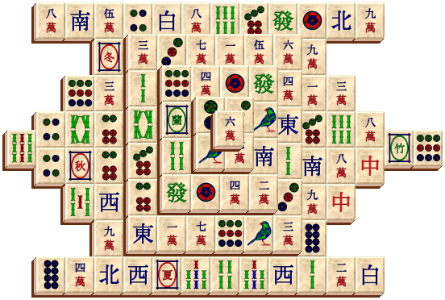
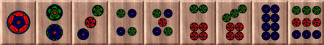
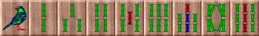
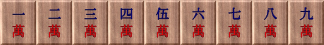
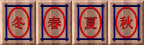
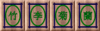
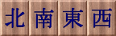
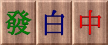
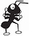

Leszedõs-logikai játék

A Mahjongg játék célja, hogy a táblán található összes követ levegyük úgy, hogy megkeressük az összeillõ párokat.
A játék kezdésekor a táblán 144 db kõ található. A köveken lévõ ábrák hét különféle csoporthoz sorolhatók:
|
Körök |
 |
|
Bambuszok |
 |
|
Írások |
 |
|
Évszakok |
 |
|
Virágok |
 |
|
Szelek |
 |
|
Sárkányok |
 |
Az évszakok és a virágok családjához tartozó kövekbõl mindössze egy-egy van, a többibõl négy (azaz két pár). A kövek értéke akkor egyezik meg, ha ugyanolyanok, viszont az évszakok és a virágok család kövei a saját családjukon belül azonos értéket képviselnek. A kövek levételének egyik feltétele tehát, hogy értékben megegyezzenek, a másik pedig, hogy vagy a jobb vagy bal oldaluk ne érintkezzen egy másik kõvel, illetve legfelül legyenek. Kijelölésük ellenkezõ esetben nem is lehetséges. Egy követ egérkattintással lehet kiválasztani. A kijelölés megszûntethetõ a kövön való ismételt klikkeléssel, a háttérképen való klikkeléssel, illetve ha egy olyan kõre kattintunk, mely szintén kijelölhetõ. Ha sikerült egy össze illõ párt találni, akkor a két elem eltûnik, és folytatódhat a további keresés. A játéknak akkor van vége, ha elfogyott az összes kõ.
A program büntetõmásodpercekkel honorálja azoknak a funkcióknak az igénybevételét, melyek a játék könnyebb megoldásához vezetnek. Ezek a másodpercek minden esetben növelik az idõeredményt!
| Ikon | Mûvelet | Büntetõmásodperc |
|
Visszavonás | 10 |
| Ismét | 10 | |
|
Csere | 20 |
| Keverés | 30 | |
| Segítség | 30 |
Játék
Új:
Új játék kérésekor a program véletlenszerûen helyezi el a köveket az éppen kiválasztott elrendezésnek megfelelõen.
Játék kiválasztása:
A programban elrendezésenként tíz elõredefiniált leosztás közül lehet választani. Az éppen kiválasztott játék száma #01-es formátumban jelenik meg az állapotsor játék mezõjében.
Megnyitás / Mentés:
Ha egy játékot máskor szeretnénk folytatni, akkor lehetõségünk van annak elmentésére. Mentéskor az elrendezés, a kiválasztott szabály, az elért idõeredmény, a büntetõmásodpercek, a visszavonható-, és megismételhetõ lépések, sõt a játék kezdeti leosztása is eltárolódik. Az elmentett játékok elrendezés, azon belül pedig név szerint vannak rendezve. A mentések egyenként illetve egyszerre is törölhetõk mind a Mentés-, mind a Megnyitás dialógusablakban. Egy elmentett játék betöltésekor az idõ automatikusan elindul, és a játékot onnan-, és azokkal a feltételekkel folytathatjuk, ahol azt abbahagytuk.
Szabály:
A kövek levételével kapcsolatos alapértelmezett vízszintes szabály a függõleges és az egyszerû szabály kiválasztásával módosítható. Míg alapértelmezésben egy kõ akkor jelölhetõ ki, ha vagy a jobb, vagy a bal oldala teljesen szabad, illetve nincs a tetején másik kõ, addig a függõleges szabály alkalmazásával ezek a feltételek módosulnak. A függõleges szabály kiválasztásával egy kõ akkor válik kijelölhetõvé, ha vagy az alsó, vagy a felsõ oldala nyitott, illetve szintén nincs a tetején kõ. Ha az egyszerû szabályrendszert választjuk, akkor a kövek levételének egyetlen feltétele mindössze annyi, hogy a levenni kívánt kõ teteje szabad legyen.
/Minden egyes szabálymódosításnál új játék indul!/
Elrendezés:
A program a kövek elhelyezésével hatvannyolc alakzatot képes felépíteni.
Eredmények:
Az eredménytábla elrendezésenként, azon belül szabályonként tárolja a legjobb tíz teljesítményt. Eredményünk akkor válik rekorddá, ha idõnk benne van a legjobb tízben. Azonos idõeredmény esetén kevesebb büntetés elérésével lehet felkerülni a táblára.
A rekordok törlésénél lehetõség van a kiválasztott elrendezéshez és szabályrendszerhez tartozó tízes lista törlésére, illetve törölhetjük az összes létezõ bejegyzést az eredménytáblából.
/Az idõt és a büntetõmásodperceket hatvan percig méri a program, amikor is az óra megáll, de a játék tovább játszható./
Kilépés:
A Kilépés az Alt-F4 billentyûkombinációval, az ablak bezárásával, illetve menübõl kezdeményezhetõ. A program minden esetben megerõsítést kér a kilépést illetõen.
Mûveletek
Újrakezdés:
Bármelyik aktuálisan játszott játék akárhányszor elõröl kezdhetõ. Az újrakezdés lehetõsége az elmentett állásokra is vonatkozik.
Felfüggesztés / Folytatás:
Lehetõség van a játék megállítására, amikor is egy éjszakai égbolt jelenik meg a játékterület helyén.
Visszavonás /Ismét:
Egy meggondolatlan lépés visszavonható, valamint egy visszavont mûvelet újra elvégezhetõ. Néhány más mûvelet (keverés, csere, ...) azonban letiltja ezeknek a funkcióknak az elérését.
Csere:
Egy legfelül elhelyezkedõ és kijelölhetõ követ a kupac aljára küldhetünk a csere menüponttal. Kupacnak a pont egymás tetején található, nem átfedésben lévõ kövek számítanak.
Keverés:
Ha nincs, vagy csak kevés levehetõ pár van a táblán, akkor érdemes a köveket megkeverni, hogy újabb párok váljanak szabaddá.
/A program véletlenszerûen keveri a köveket, ezért fõleg kis mennyiségû köveknél elõfordul, hogy a keverés utáni állapot megegyezik a keverés elõttivel./
Segítség:
Abban az esetben, ha már végképp nem találjuk a levehetõ párokat, érdemes a segítség ikonra kattintani, amikor is klikkelésenként megvillannak az értékben egyezõ kövek. Mindez persze büntetõmásodpercek terhe mellett.
Nézet
Eszköztár:
Beállítható, hogy látszódjanak-e menüsor alatt elhelyezkedõ ikonok.
Állapotsor:
Megjeleníthetõ, illetve elrejthetõ a program képernyõjének alján található információs mezõ. Ennek bal oldalán a menüpontok leírása, míg a jobb oldalán a játék aktuális állapotával kapcsolatos legfontosabb információk jelennek meg. A jobb oldalon található mezõk egyenként elrejthetõk illetve megjeleníthetõk az állapotsor helyi menüjének segítségével.
Kõpaletta:
A Kõpaletta büntetõmásodpercek kiszabása nélkül nyújt jelentõs segítséget a párok megtalálásához. A palettán, beállítástól függõen azoknak a köveknek a képei jelennek meg, melyek területére bevisszük az egérkurzort. A beállításokat a kõpaletta területén egy jobb egérkattintással elõhívott helyi menüben lehet változtatni. A megjelenítéssel kapcsolatos információk a következõk lehetnek:
A paletta helyi menüje további beállításokat is felkínál. Ezek a menüpontok a játékterületen való elhelyezésével, és a kövek kinézetével kapcsolatosak. A kõpaletta az elrejtés után a Nézet menü Kõpaletta opciójával csalogatható elõ újra.
/A függõleges fekvésû kõpaletta fentrõl lefelé, a vízszintes fekvésû pedig balról jobbra helyezi el az egyre mélyebb rétegekben található köveket!/
Beállítások
Stílus:
A Mahjongg játék huszonegy
féle kõkészletébõl lehet kiválasztani a kövek tetején lévõ képet.Mintázat:
A kövek oldalán található mintázat tizenháromféle színsémából kerülhet ki.
Térhatás:
A program a térhatást a kövek eltolásával éri el, így megadható, hogy az melyik irányba történjen. A térhatás változtatásával a takarásban lévõ kövek is láthatóvá válnak.
Háttér:
Néhány kõkészlet könnyen beleolvadhat a háttérbe, ami a kép cseréjével könnyen kiküszöbölhetõ. Háttérnek választható egy kép, egy textúra, illetve egy színátmenetes kitöltés, ahol megadható a színséma és a kitöltés iránya.
| Ikon | Mûvelet | Billentyûkombináció |
| Új játék | F2 | |
| Játék kiválasztása | F3 | |
 |
Megnyitás | Ctrl-O |
 |
Mentés | Ctrl-S |
 |
Eredmények | Ctrl-R |
 |
Kilépés | Alt-F4 |
| Újrakezdés | Ctrl+Alt-R | |
 / / |
Felfüggesztés / Folytatás | Ctrl+P |
|
Visszavonás | Ctrl-Z |
| Ismét | Ctrl+Shift-Z | |
|
Csere | Ctrl-C |
| Keverés | Ctrl+Alt-S | |
| Segítség | Ctrl-H | |
|
- |
Háttér | Ctrl-B |
| Használat | F1 | |
 |
Névjegy | Ctrl-N |
